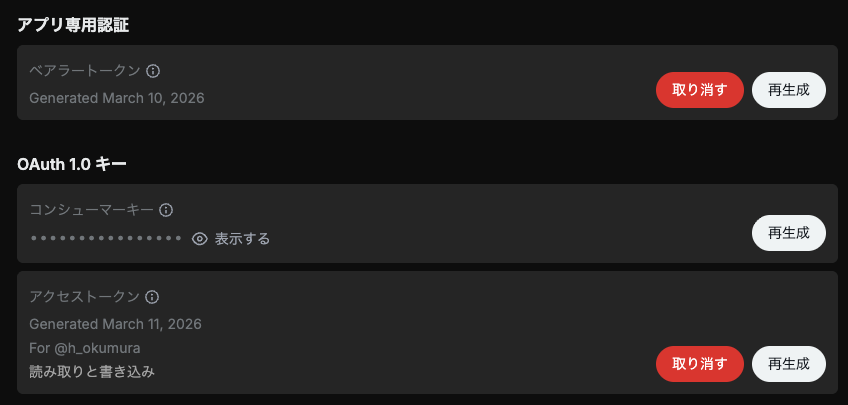

X（Twitter）のAPIを使って自動投稿・取得する方法を説明します。
2026年2月ごろから、無料ではできなくなりました。詳しくはDeveloperのページを参照してください。支払いの設定ができたら、コンソールから新たにPay Per Useのアプリを作ります。2026-04-20以降の料金は、1回の投稿に0.015ドル（URL付きは0.20ドル！）のようです（取得0.005ドルは今まで通り？ GET /2/users/{id}/tweets を使えば0.001ドル？）。とりあえずOAuth 1.0キーが必要です。

公式のパッケージ xdk が公開されており、コード例が X API v2 - Python Examples にいろいろ載っていますが、以下では汎用のパッケージを使う方法を示しました。あらかじめ pip install requests requests-oauthlib しておきます。
import requests
from requests_oauthlib import OAuth1
API_KEY = "..." # OAuth 1.0 コンシューマーキー
API_SECRET = "..." # OAuth 1.0 シークレット
ACCESS_TOKEN = "..." # OAuth 1.0 アクセストークン
ACCESS_TOKEN_SECRET = "..." # OAuth 1.0 アクセストークンシークレット
auth = OAuth1(API_KEY, API_SECRET, ACCESS_TOKEN, ACCESS_TOKEN_SECRET)
text = "こんにちは！"
r = requests.post(
"https://api.x.com/2/tweets",
auth=auth,
json={"text": text},
timeout=30,
)
print(r.status_code, r.text)
r.raise_for_status()
tweet_id = r.json()["data"]["id"]
print("Posted:", tweet_id)
読む方は Get Post by ID または Get Posts by IDs に書いてありますが、Bearer token を使う方法（OAuth 2.0 App-only）、API key/secret + access token/secret を使う方法（OAuth 1.0a）があります（ほかにもありますが省略）。前者はログインなしで読む方法、後者はログインして読む方法に対応します。まず前者（params については後述）：
import json
import requests
BEARER_TOKEN = "..."
TWEET_ID = 2031524952067977685
url = f"https://api.x.com/2/tweets/{TWEET_ID}"
r = requests.get(
url,
headers={"Authorization": f"Bearer {BEARER_TOKEN}"},
# params=params,
timeout=30
)
print("Status:", r.status_code)
r.raise_for_status()
payload = r.json()
print(json.dumps(payload, indent=2, ensure_ascii=False))
後者：
import json
import requests
from requests_oauthlib import OAuth1
API_KEY = "..."
API_SECRET = "..."
ACCESS_TOKEN = "..."
ACCESS_TOKEN_SECRET = "..."
TWEET_ID = 2031524952067977685
url = f"https://api.x.com/2/tweets/{TWEET_ID}"
auth = OAuth1(API_KEY, API_SECRET, ACCESS_TOKEN, ACCESS_TOKEN_SECRET)
r = requests.get(
url,
auth=auth,
# params=params,
timeout=30,
)
print("Status:", r.status_code)
r.raise_for_status()
payload = r.json()
print(json.dumps(payload, indent=2, ensure_ascii=False))
パラメータをいろいろ指定できます。# params=params の頭の # を取って、パラメータをあらかじめ次のような感じで指定します。不要な項目は # で消してください。
params = {
"tweet.fields": ",".join([
"article",
"attachments",
"author_id",
"card_uri",
"community_id",
"context_annotations",
"conversation_id",
"created_at",
"display_text_range",
"edit_controls",
"edit_history_tweet_ids", # default
"entities",
"geo",
"id", # default
"in_reply_to_user_id",
"lang",
"media_metadata",
# "non_public_metrics", # 指定するとエラーになることが多い
"note_tweet", # long-form post
# "organic_metrics", # 指定するとエラーになることが多い
"possibly_sensitive",
# "promoted_metrics", # 指定するとエラーになることが多い
"public_metrics",
"referenced_tweets",
"reply_settings",
"scopes",
"source",
"suggested_source_links",
"suggested_source_links_with_counts",
"text", # default
"withheld"
]),
"expansions": ",".join([
"author_id",
"referenced_tweets.id",
"edit_history_tweet_ids",
"in_reply_to_user_id",
"attachments.media_keys",
"attachments.poll_ids",
"geo.place_id",
"entities.mentions.username",
"referenced_tweets.id.author_id",
]),
"user.fields": ",".join([
"id", "name", "username", # defaults
# "affiliation", "confirmed_email",
# "connection_status", "created_at", "description", "entities",
# "is_identity_verified", "location", "most_recent_tweet_id",
# "parody", "pinned_tweet_id", "profile_banner_url",
# "profile_image_url", "protected", "public_metrics",
# "receives_your_dm", "subscription", "subscription_type",
# "url", "verified", "verified_followers_count",
# "verified_type", "withheld",
]),
"media.fields": ",".join([
"media_key", "type", # defaults
# "url", "duration_ms", "height",
# "preview_image_url", "public_metrics",
# "width", "alt_text", "variants"
]),
"poll.fields": ",".join([
"id", "options", # defaults
"duration_minutes", "end_datetime", "voting_status",
]),
"place.fields": ",".join([
"full_name", "id", # defaults
"contained_within",
"country", "country_code", "geo", "name", "place_type",
]),
}
パラメータを指定しても取得できないものもあり、よくわかりません。